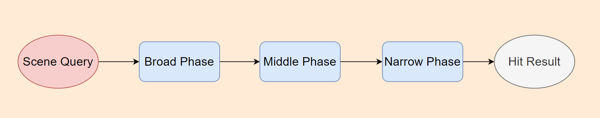

Introduction
Scene query performance can always be a huge issue for game optimization. Thus PhysX has already provided a optimization mechanism called Volume Caching for accelerating scene queries.
This mechanism has already been deprecated in PhysX 3.4 or later versions. In my point of view, Volume Caching can sometimes, or rather, always result in worse performance when it is not used properly.
However, we can still learn something from this method.
Normal Scene Query Routine
The Most Wildly-Used Method
In a normal scene query routine, we need to go through Broad Phase, Middle Phase and Narrow Phase before we can finally get the result:

The broad phase and middle phase roughly determine which physics bodies might intersect, and then the narrow phase performs the actual detection.
This method works fine in most cases. And in fact, this is the only scene query method that most game engine provide.
But What’s The Price?
Everything comes with a price, even for an optimization mechanism.
An optimization mechanism works if and only if the price being lower than performance we actually gain. For the traditional scene query routine, it always works because a narrow phase is extremely expensive when compared with broad phase and middle phase in a common game scene.
In general, the broad phase and middle phase stage cost little CPU performance because intersection detection between AABB is rather cheap.
But for an open-world scene contains millions of rigid bodies, the broad phase and middle phase can cost some performance. And we may save a considerable amount of performance by getting rid of those broad phase or middle phase operation.
And yes, that is exactly the design goal of volume caching.
Volume Caching Scene Query Routine
How Does Volume Caching Work?
Sometimes we know that there would be an amount of scene queries around a specific location in the near future.
For example, a Character Movement Component can perform more than 5 scene queries around this character in one frame. By collecting colliders around this character in advance, we can skip those repeated broad phase or middle phase stage and go through every collider to detect intersection directly.
Trade-off Details
Let’s have $ cost_{b+m} $ to represent the performance cost of broad phase and middle phase.
The whole performance cost to perform $n$ scene queries is:
$$ Cost_{b+m} + N_{narrow} \cdot Cost_{narrow} $$
where $ 0 \leq N_{narrow} \leq 5$ in most cases.
But for volume caching routine, the whole cost is like:
$$ N_{cached} \cdot Cost_{narrow} $$
As a result, the delta cost is like:
$$ \Delta{Cost} = Cost_{b+m} + Cost_{narrow} \cdot ( N_{narrow} - N_{cached} ) $$
The larger $ \Delta_{Cost} $ is, the more performance we can save.
Now here comes the question: How To Save Performance As Much As Possible?
- The $ Cost_{b+m} $ can cost some performance when the scene contains lots of colliders. Thus volume caching can save some performance in a open world scene.
- We should keep $N_{cached}$ relative small. The default maximum value in physx is 24(for static object) and 8(for movable object). Thus volume caching can fail if collider density is high in an area.